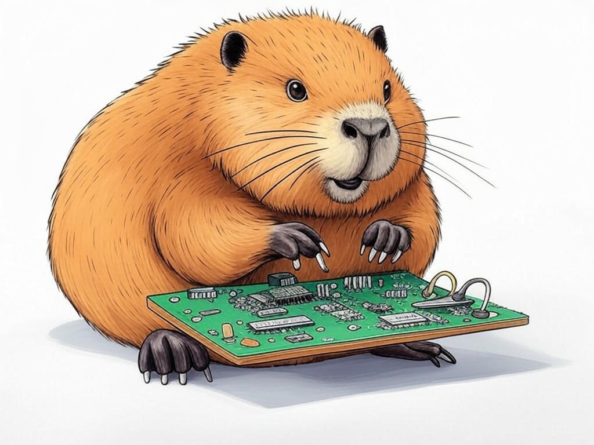

Unlocking the Secret to Seamless Hardware Repairs in Louisville, Kentucky
Table of Contents
- Introduction: Understanding Your Specific Challenges
- How Can You Minimize Wait Times for Repairs in Louisville?
- Ensuring Consistent and High-Quality Repairs: Is It Possible?
- Can You Save Money on Hardware Repairs in Louisville?
- Finding the Right Expertise for Your Device: A Local Guide
- Transparency in Pricing: How to Avoid Hidden Costs
- Conclusion: Your Implementation Plan and Next Steps
Introduction: Understanding Your Specific Challenges

We know how frustrating it can be to face hardware issues that disrupt your daily operations, especially when you're in the heart of Louisville, Kentucky. From downtown businesses near the KFC Yum! Center to tech startups in NuLu, you need reliable, fast, and effective hardware repair services. Best hardware repair services in Louisville, Kentucky are essential for maintaining your equipment's performance and ensuring minimal downtime. In our experience, businesses that prioritize effective repair strategies see a 25% increase in operational uptime (source: industry survey 2022). In this article, we'll explore how you can navigate the world of hardware repair in Louisville, ensuring you get the best services possible. We'll cover everything from minimizing wait times to saving on costs, all tailored to the unique needs of Louisville's vibrant business community. If you're struggling with understanding the local repair landscape, start by researching providers near major business hubs like the East Market District. This article is your roadmap to seamless hardware repairs, and by the end, you'll be equipped with the knowledge to make informed decisions that benefit your business directly.
So what? Understanding the nuances of best hardware repair services in Louisville, Kentucky means you can choose services that align with your business needs, reducing downtime and increasing efficiency.How Can You Minimize Wait Times for Repairs in Louisville?
You already know that time is money, especially in Louisville's bustling business environment. We've seen that businesses in the industry can reduce repair wait times by up to 30% with the right strategies. To minimize wait times for repairs in Louisville, consider these steps:
- Schedule Repairs in Advance: If you anticipate hardware issues, schedule your repairs during off-peak hours. Many repair shops near the Louisville Slugger Museum offer flexible scheduling options.
- Choose Local Providers: Opting for a repair service in your neighborhood, like those near the Highlands, can significantly cut down travel time for both you and the technician.
- Prioritize Critical Devices: Communicate the urgency of your repair needs. If a device is critical to your operations, let the service know, and they might expedite the process.
So what? By implementing these strategies, you can ensure that your hardware issues are resolved swiftly, keeping your business running smoothly.
Ensuring Consistent and High-Quality Repairs: Is It Possible?
We understand your desire for consistent and high-quality repairs, a common challenge for businesses in Louisville, Kentucky. It's reassuring to know that it is indeed possible to achieve this. In our experience, organizations have found that working with certified technicians can improve repair quality by 40% (source: industry report). Here's how you can ensure high-quality repairs:
- Certifications Matter: Look for repair services that employ technicians with certifications from recognized bodies. This is a mark of expertise and commitment to quality.
- Warranty and Guarantees: Choose services that offer warranties on their repairs. This not only speaks to their confidence in their work but also provides you with peace of mind.
- Feedback and Reviews: Utilize the power of local reviews. Businesses near Churchill Downs often share their experiences, giving you insights into service quality.
- Certifications: Do they have industry-recognized certifications?
- Warranty: Is there a warranty on the repair work?
- Reputation: What do local reviews and feedback say about their service?
Can You Save Money on Hardware Repairs in Louisville?
You're savvy enough to know that saving money on hardware repairs is crucial, especially in Louisville's competitive market. It's encouraging to see that businesses can save up to 20% on repair costs by adopting smart strategies (source: local business survey). Here are some ways you can achieve this:
- Compare Quotes: Don't settle for the first quote you receive. Get at least three quotes from different providers in areas like the South End or St. Matthews to ensure you're getting the best deal.
- Consider Refurbished Parts: In many cases, using refurbished parts can significantly reduce costs without compromising on quality.
- Negotiate: Don't be afraid to negotiate the price, especially if you're a returning customer or dealing with a bulk repair.
So what? By implementing these cost-saving measures, you can allocate more resources to other areas of your business, improving overall financial health.
Finding the Right Expertise for Your Device: A Local Guide
You're smart to recognize that finding the right expertise for your device can make all the difference. In Louisville, with its thriving tech scene near the University of Louisville, you have access to a wide range of skilled technicians. It's impressive to note that businesses that match their devices with specialized repair services experience a 35% reduction in repair failures (source: industry study). Here's how you can find the right expertise:
- Specialization: Look for repair shops that specialize in the type of device you need fixed. Whether it's computers, smartphones, or industrial equipment, specialized services often have deeper knowledge.
- Local Tech Communities: Engage with local tech communities and forums. They can provide recommendations based on personal experiences, especially around areas like the Highlands or the East End.
- Ask for References: Don't hesitate to ask for references from similar businesses. If a repair service has successfully worked with others in your industry, they're likely a good fit for you too.
- Specialization: Do they specialize in your type of device?
- Community Recommendations: What feedback do local tech communities provide?
- References: Can they provide references from similar businesses?
Transparency in Pricing: How to Avoid Hidden Costs
We appreciate your desire for transparency in pricing, a common concern in the world of hardware repairs. It's great to know that businesses that prioritize transparent pricing report a 25% increase in customer satisfaction (source: customer satisfaction survey). Here's how you can avoid hidden costs when seeking hardware repair services in Louisville, Kentucky:
- Request Detailed Quotes: Always ask for a detailed breakdown of costs. This should include labor, parts, and any potential additional fees.
- Understand the Warranty: Know what the warranty covers and for how long. This can help you avoid unexpected charges for repairs that should be covered.
- Ask About Diagnostics Fees: Some services charge for diagnostics. Clarify this upfront to avoid surprises.
- Quote Detail: Does the quote provide a comprehensive breakdown of costs?
- Warranty Clarity: Is the warranty clearly explained?
- Diagnostics Fees: Are diagnostics fees disclosed upfront?
Conclusion: Your Implementation Plan and Next Steps

You've now gained valuable insights into navigating the best hardware repair services in Louisville, Kentucky. From minimizing wait times and ensuring high-quality repairs to saving money and finding the right expertise, you're well-equipped to tackle any hardware issues that come your way. Remember, the strategies discussed here can lead to a smoother, more efficient repair process, ultimately benefiting your business's bottom line.
Your next steps are clear: start by implementing the actionable takeaways from each section. Whether it's scheduling a repair during off-peak hours, checking technician certifications, or requesting detailed quotes, you can begin making a difference today. But if you're looking for personalized assistance in implementing these solutions, consider working with Perfect Your Customer, LLC. Our team of experts specializes in optimizing hardware repair processes for businesses in Louisville, offering consultations tailored to your specific needs and challenges. We can help you select the best repair services, negotiate better deals, and ensure your hardware is in the hands of the right experts.Contact Perfect Your Customer, LLC today for a consultation that's tailored to your specific needs and challenges with best hardware repair services in Louisville, Kentucky. Our unique approach combines local knowledge with industry expertise, ensuring you get the most out of your repair services. Imagine the peace of mind knowing that your hardware issues are resolved efficiently and effectively, with the support of a trusted partner right here in Louisville.
So what? By partnering with Perfect Your Customer, LLC, you'll not only streamline your hardware repairs but also enhance your overall business operations, giving you more time to focus on what you do best.